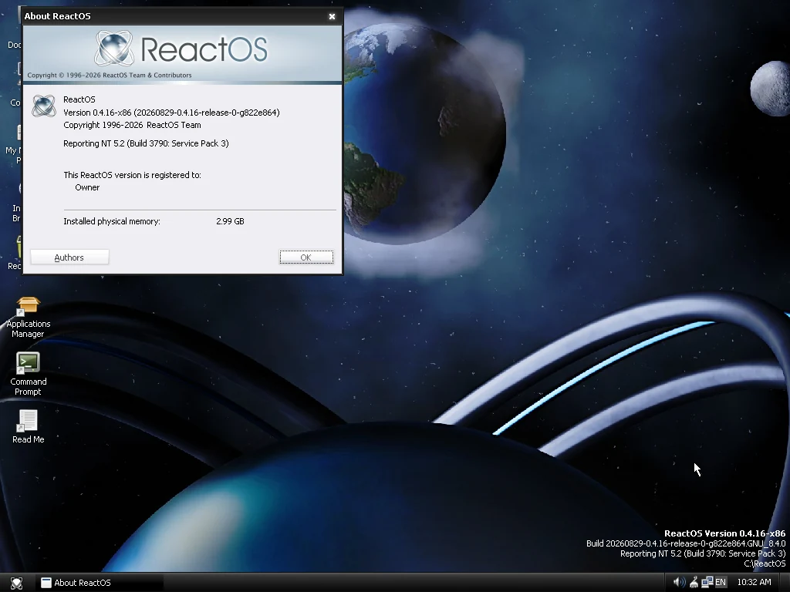
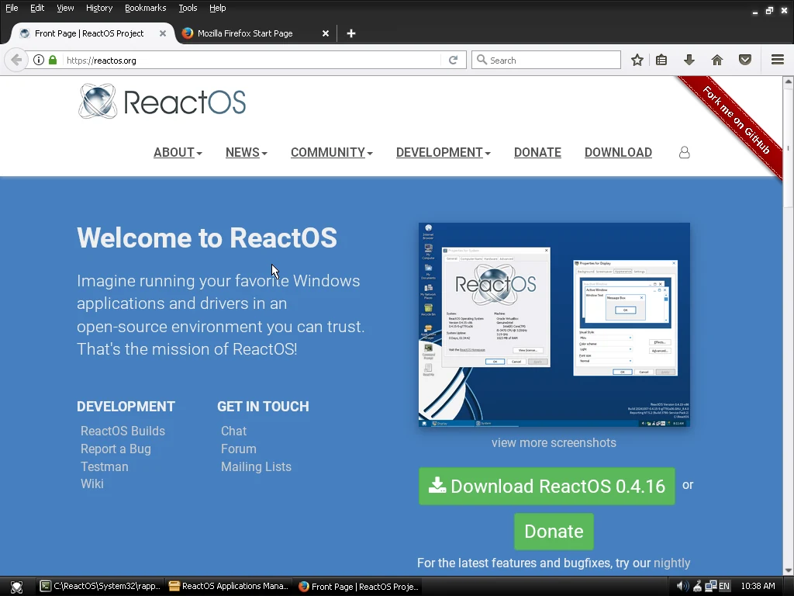
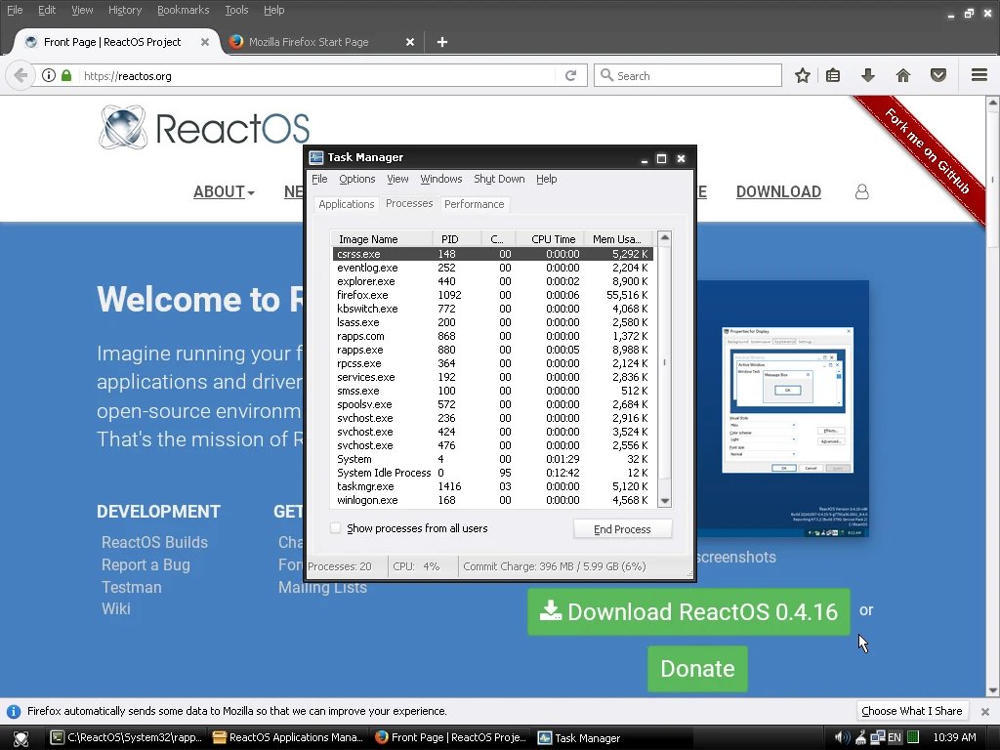
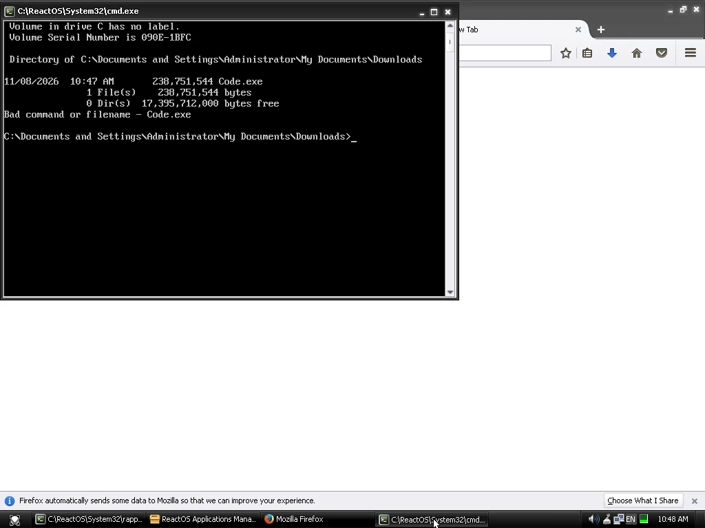
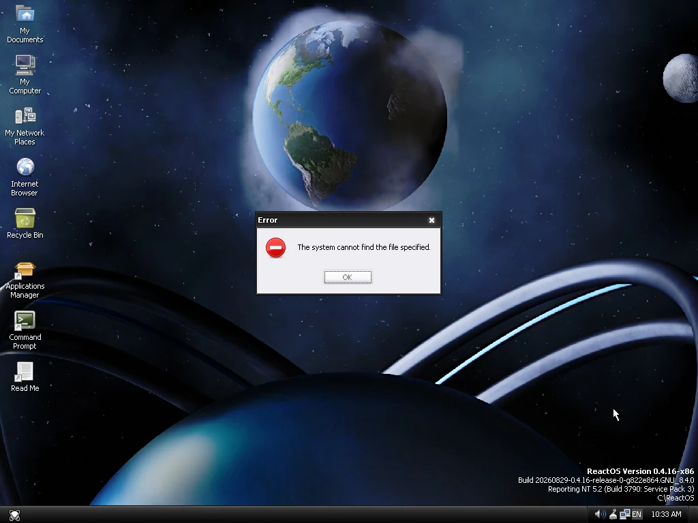
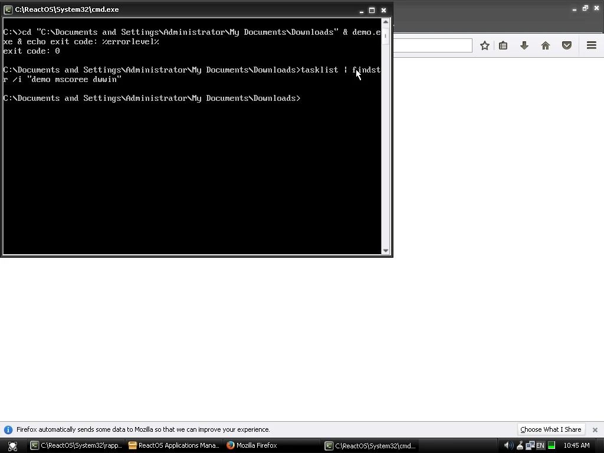
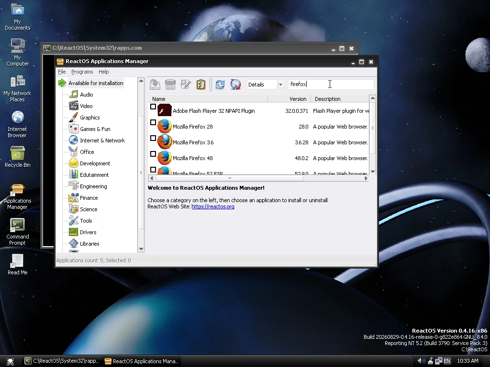
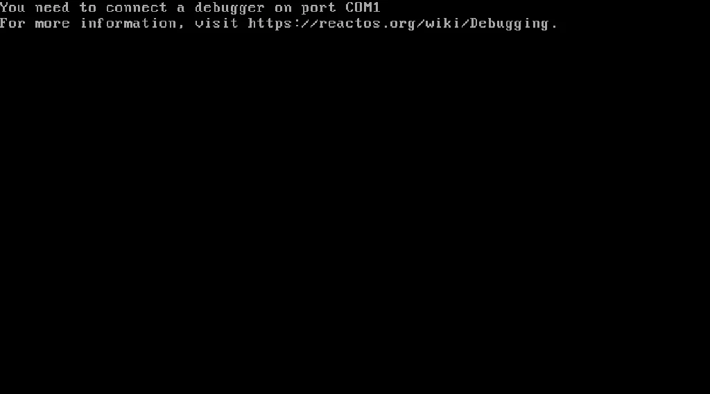
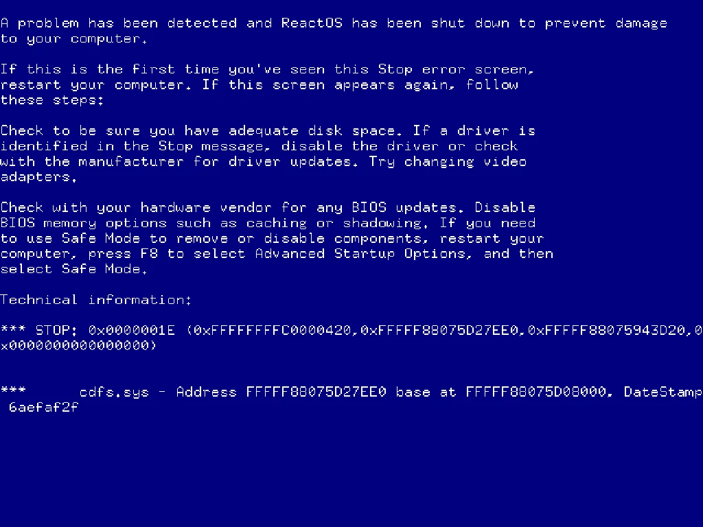

Chrome, Firefox, VS Code, PowerShell 7 and .NET Framework 4.8 programs, on an NTFS disk with a firewall switched on. Release 2026.11-1.
DownloadSource and changelog
Every claim here has a screenshot below or a measured number.
Chrome 157, Firefox 159, VS Code 1.145 and PowerShell 7.6 start and work.
64-bit and 32-bit Firefox run at the same time; Task Manager marks 32-bit processes with *32.
A WinForms program built in the VM runs (CLR 4.0.30319.42000).
Reports NT 10.0, build 19045, so installers that check the version proceed. Stock ReactOS reports NT 5.2.
A Features dialog installs PowerShell 7, Scoop, .NET 4.8, Firefox, the AAC decoder and more.
134x faster demand-zero page faults, 66x faster copy-on-write faults, 10.6x faster heap, against stock ReactOS (32-bit builds, single-threaded tests).
The same task on a fresh VM of each system (4 vCPU, 4 GB RAM, 1024x768). Screen dumps, not edited. ReactOS is the 0.4.16 x86 release; the amd64 nightly could not install: 0x1E / 0x71 (see below). NitroOS is an amd64 build of main 049578fe905 with the brand layer. Where ReactOS cannot do the task, the right-hand picture shows what happened.
Each system's default look, 1024x768 on both.

NitroOS reports NT 10.0 (build 19045) and 3.99 GB of the 4 GB; ReactOS 0.4.16 reports NT 5.2 (build 3790) and 2.99 GB.


The same page on both. NitroOS: Chrome 157. ReactOS: Firefox 52.9 ESR, the newest Firefox in its Applications Manager.


NitroOS: two Firefox 159 windows; Task Manager lists both plain firefox.exe (64-bit) and firefox.exe *32 processes. ReactOS: one Firefox 52, 20 processes, none marked *32.


NitroOS: VS Code 1.145.2. ReactOS: the official 64-bit Code.exe from the portable build, started in cmd: "Bad command or filename".


NitroOS: $PSVersionTable, PowerShell 7.6.9. ReactOS: pwsh is not included ("The system cannot find the file specified"); installing it by hand was not tested.


The same 6,144-byte demo.exe, built inside the NitroOS VM with the .NET 4.8 compiler. NitroOS: it opens and the controls work. ReactOS: it returns to the prompt at once, with no window and no message.


NitroOS: the Features dialog (AAC decoder and Scoop ticked), then the installer. ReactOS: the Applications Manager (404 entries) searched for "firefox".


ReactOS 0.4.16 x86 release; the amd64 nightly could not install. Evidence, not a verdict on the ReactOS project.


2026-11-08, one host (AMD EPYC 9254, QEMU/KVM), 4 vCPU, 4 GB, median of 5 runs, 32-bit builds of both, both on FAT. Stock ReactOS is upstream master 4d1f0148bed, not the 0.4.16 release used in the screenshots. Method and raw data: BENCHMARKS.md.
| Test | Stock ReactOS | NitroOS | Factor |
|---|---|---|---|
| Demand-zero page faults (kpages/s) | 8.5 | 1142 | 134x |
| Copy-on-write page faults (kpages/s) | 6.7 | 447 | 66x |
| File-mapped page faults (kpages/s) | 42.9 | 1115 | 26x |
| HeapAlloc/HeapFree, 1M ops (ms) | 1600 | 151 | 10.6x |
| VirtualAlloc commit/decommit, 32768 (ms) | 69.4 | 13.4 | 5.2x |
| 7-Zip benchmark total (MIPS) † | 3444 | 22640 | 6.6x |
| cmd.exe /c exit, 50 starts (ms) † | 596.6 | 285.9 | 2.1x |
| Process create + wait, 200 (ms) † | 1686 | 584.3 | 2.9x |
| Boot to logon (s) | 10 | 6 | 1.7x |
† Multi-core work: stock ReactOS i386 runs a uniprocessor kernel by default, NitroOS uses all 4 vCPUs, so these rows partly reflect that difference. The other rows are single-threaded.
Where stock ReactOS is ahead (it is a single-CPU kernel): 4-thread heap test 450 ms vs 12,180 ms (27x), event ping-pong 51 ms vs 583 ms (11x), 10,000 small-file reads on FAT 95 ms vs 183 ms (1.9x).
Release 2026.11-1, 2026-11-08. Hosted on repo.nitroos.org; check against SHA256SUMS.
| File | Size (bytes) | SHA-256 |
|---|---|---|
| amd64 with 32-bit support | 800,063,488 | 1f12edc4e134299f7f4341f64f7d171872b88f00bfaed03399b2103524d7f14f |
| i386 | 472,907,776 | ddfb5a43768d44b5c45ae7c588252afc7e587db0ba9cce01b452d0defef4011e |
| SHA256SUMS |
Full hashes, the source tarball and the cumulative patch: GitHub release. Quick start and build instructions: README.